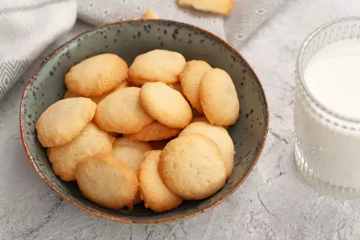

Butter Cookie

Description
How to make a simple but versatile butter cookie
Ingredients
- 1 cup butter
- 1 cup white sugar
- 1 egg
- 2 ⅔ cups all-purpose flour
- ¼ teaspoon salt
- 2 teaspoons vanilla extract
Steps
- In a large bowl, cream together the butter and white sugar until light and fluffy. Beat in the egg, then stir in the vanilla. Combine the flour and salt; stir into the sugar mixture. Cover dough, and chill for at least one hour. Chill cookie sheets.
- Preheat oven to 400 degrees F (200 degrees C). Press dough out onto ungreased, chilled cookie sheets.
- Bake for 8 to 10 minutes in the preheated oven, or until lightly golden at the edges. Remove from cookie sheets to cool on wire racks.
Nutrition Facts
103 calories; protein 1.2g; carbohydrates 12.7g; fat 5.3g; cholesterol 18.7mg; sodium 54.6mg.